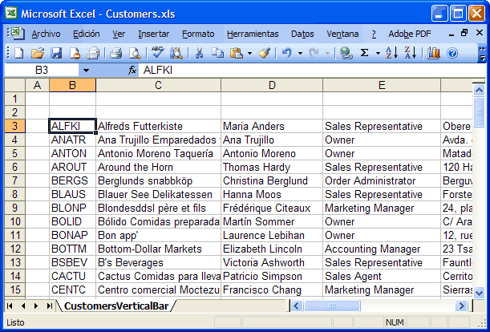

Excel DataLink Example
This example shows how to extract and insert records to and from a Microsoft
Excel Worksheet.
Introduction
If You want to transfer data from this Excel to a File or other Data Storage you
must follow this steps:
For example, using the following worksheet (from the Northwind DB)

Using a Delimited Format
You must define:
The Solution
Finally, use the ExcelDataStorage to Read the records:
{$FOOTER$}